Geschiedenis van het Joods Antwerpen
Een uitgebreide tijdlijn van de oprichting, groei, uitdagingen en veerkracht van de gemeenschap door de eeuwen heen.
De vroege nederzetting
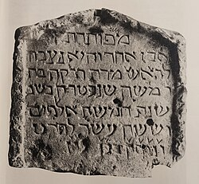
Joden zijn mogelijk rond 53-57 n.Chr. de Romeinse legioenen gevolgd naar wat nu België is, maar er is geen sprake van een voortdurende Joodse aanwezigheid uit deze periode. De vroegste gedocumenteerde georganiseerde Joodse nederzetting in de regio dateert uit het begin 11e eeuw.
In 1022, Boudewijn IV, graaf van Vlaanderen, uitgenodigd Jacob bar Jequthiel en dertig andere joden van Rouen om zich in Arras te vestigen. Deze uitnodiging was vooral ingegeven door economische redenen overwegingen, aangezien Joodse kooplieden en financiers werden gezien als bijdragers aan de regionale economie ontwikkeling. Hoewel Arras tegenwoordig in Noord-Frankrijk ligt, was het destijds een deel van het gebied van het Graafschap Vlaanderen, een gebied dat historisch verbonden is met wat nu België is.
Het eerste tastbare archeologische bewijs van een Joodse aanwezigheid in het huidige België dateert uit de 13e eeuw. Een grafsteen uit 1255–1256, ontdekt in Tienen (Tirlemont), draagt de naam Rebecca vleermuis Moshe.
Joodse immigratie in de 12e-14e eeuw
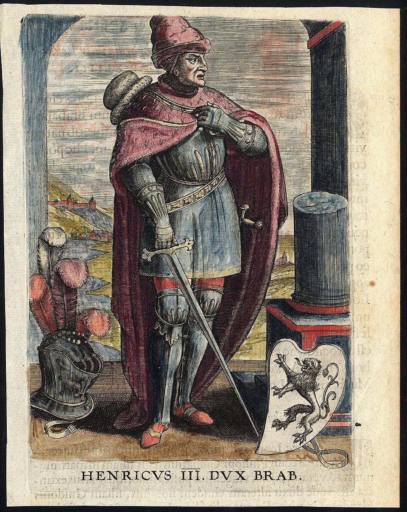
Tegen de 13e eeuw ontstonden er joodse gemeenschappen in Brabant, inclusief Antwerpen en Brussel, maar ook in andere stedelijke centra van de regio. Het eerste officiële document specifiek verwijzend naar een Joodse gemeenschap in Antwerpen komt voor in het testament van Hendrik III, Hertog van Brabant. In 1261 sprak hij de wens uit dat er joden in Brabant zouden zijn verdreven, daarbij verwijzend naar hun waargenomen rol als woekeraars. Hoewel deze uitzetting nooit heeft plaatsgevonden, Joodse inwoners werden onderworpen aan hogere belastingen en wettelijke beperkingen.
Tussen de 12e en 14e eeuw waren er joden, voornamelijk afkomstig uit Duitse gebieden langs de Rijn - gevestigd in het hertogdom Brabant, vooral in Brussel, en in het graafschap Henegouwen, vooral in Bergen. Deze gemeenschappen waren klein en kwetsbaar.
Halverwege de 14e eeuw, tijdens het uitbreken van de Builenpest (1348-1349), Joden in Antwerpen en andere grote steden werden beschuldigd van het vergiftigen van waterbronnen. Deze beschuldigingen leidden tot hevige vervolging, waarbij veel Joden werden opgehangen. verbrand op de brandstapel, doodgeslagen of verdronken. Soortgelijk geweld vond overal plaats de regio, wat heeft bijgedragen aan de vernietiging van verschillende Joodse gemeenschappen.
In 1370 werden joden in Brussel die eerdere vervolgingen hadden overleefd, op de brandstapel verbrand. wat leidde tot de bijna totale verdwijning van de Joodse gemeenschap in de stad.
Bijkomend bewijs van het joodse leven in het middeleeuwse België omvat een Hebreeuws manuscript gedateerd op 1310, bewaard in de bibliotheek van de Universiteit van Hamburg, geschreven door een schrijver uit Brussel.
Na de verdrijving van de joden uit Spanje en Portugal (1492–18e eeuw)

Na de verdrijving van de joden uit Spanje in 1492 en uit Portugal in 1497, bekeerde rijke Joodse handelaars, die de Inquisitie omschreef als Crypto-Joden, verspreid over heel Europa. Crypto-joden waren joden die gedwongen waren zich te bekeren Het christendom bleef echter in het geheim het jodendom praktiseren. Zij vestigden zich ook in de Zeventien provincies van de Lage Landen onder Spaans bewind. Het oude Zuiden provincies komen grofweg overeen met het huidige België, en de noordelijke provincies met het huidige Nederland. Nederland werd daarna een onafhankelijk land het Verdrag van Münster in 1648 en werd omgedoopt tot de Republiek der Zeven Verenigde Provinciën.
Terwijl Spaanse joden zich in de 16e eeuw in Nederland vestigden, waren zij en anderen hoogstwaarschijnlijk crypto-joden, vestigden zich ook in Antwerpen en Brugge. Aan het begin van de 16e eeuw speelden de in Antwerpen wonende crypto-joden een rol belangrijke rol in de economische en financiële zaken van de stad. Vanwege het Spaans Onder druk verlieten de meesten van hen Antwerpen rond 1540–1550, waarmee een einde kwam aan de tweede Jood immigratie in de regio.
Hoewel sommige crypto-joden in de 17e eeuw naar Antwerpen terugkeerden, konden ze dat niet langer dezelfde economische en financiële status genieten als een eeuw eerder. Van 1650 tot 1694 bestond er in Antwerpen een geheime synagoge, en enkele crypto-joodse dichters woonde in die tijd ook in Brussel.
Nadat Antwerpen in 1713 onder Oostenrijks bewind kwam, konden joden hun religie belijden opener. Ze kregen zelfs nog grotere vrijheid na de afkondiging van de “Edict van tolerantie”van Habsburgse keizer Jozef II in 1781.
Tijdens de 18e eeuw was er Joodse aanwezigheid in de zuidelijke provincies, onder Oostenrijks gezag heerschappij, bleef laag; In 1756 woonden ongeveer 100 joden – huisbewoners – in Brussel.
Franse overheersing en Belgische onafhankelijkheid (19e eeuw)
In 1808, onder het bewind van Napoleon Bonaparte, werden ongeveer 800 Joden in tweeën geïntegreerd Belgische kerkenraden opgericht als onderdeel van het Napoleontische systeem voor erkende organisaties religies.
In 1816 werd er een officiële Joodse gemeenschap van ongeveer 150 personen opgericht Antwerpen, bekend als de Communauté Israëlitisch. De eerste gemeenschappelijke Joodse gebeden waren gehouden in de woning van Moise Kreyn, met goedkeuring van het stadsbestuur. In 1828 werd de De Joodse gemeenschap van Antwerpen kreeg een eigen begraafplaats. In 1829 bedroeg de Joodse bevolking van Antwerpen telde 151.

Naar aanleiding van de Belgische Revolutie In 1830 werd België onafhankelijk en werd het Koninkrijk van België. De Belgische Grondwet kondigde de scheiding van kerk en staat af gegarandeerde vrijheid van godsdienst.
In 1831, een jaar na de onafhankelijkheid, werd het jodendom officieel erkend als religie de Consistoire Central Israélite de Belgique aangewezen als zijn ambtenaar vertegenwoordigend orgaan. De Joodse religieuze praktijk was gegarandeerd, en Joods onderwijs was dat ook juridisch georganiseerd door de nationale autoriteiten, met name onder toezicht van het ministerie van Justitie.
Vandaag is het Joods Centraal Consistorie van België verantwoordelijk voor het praktische beheer aspecten van het joodse religieuze leven in het land, inclusief de benoeming van rabbijnen, voorzangers, pedels, rituele slachters en religieuze leraren, evenals de ambtenaar erkenning van synagogen.

Tijdens de 19e eeuw nam de Joodse bevolking van België geleidelijk toe aankomst van joden uit de Elzas en Lotharingen in Zuid-België, Duitse joden in Brussel, en Nederlandse joden in Antwerpen, die later de stichting oprichtten Hollandse Synagoge. De De onder Napoleon ingestelde kerkenraden bleven als model dienen voor de organisatie van Joods religieus leven in België.
In 1880 werd de Joodse bevolking van België geschat op ongeveer 4.300 personen. Na de moord op de Russische tsaar in 1881 ontstond er een nieuwe golf van massale emigratie Oost-Europa ontstond als gevolg van pogroms. Voor veel van deze vluchtelingen België – vooral Antwerpen – fungeerde als doorvoerland op weg naar de Verenigde Staten.
Bovendien migreerden Sefardische Joden tijdens de Tweede Wereldoorlog vanuit het Ottomaanse Rijk naar België Grieks-Turkse oorlog, kort voor het begin van de 20e eeuw.
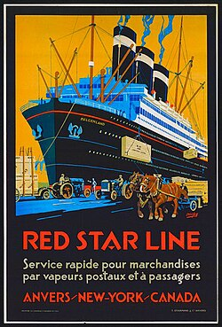
Tegen het midden van de 19e eeuw was de haven van Antwerpen uitgegroeid tot een van de grootste van Europa. Regelmatige transatlantische zeeverbindingen tot stand gebracht, met name via de Red Star Line, die miljoenen emigranten naar de Verenigde Staten vervoerde. Terwijl velen Joodse vluchtelingen waren aanvankelijk van plan verder te emigreren, sommigen kozen ervoor zich permanent te vestigen Antwerpen, Aarlen, Brussel, Charleroi, Gent, Luik en Oostende. In 1914, de joden bevolking van België werd geschat op ongeveer 40.000 individuen.
Vooroorlogse periode (1918-1939)
Na de Eerste Wereldoorlog ontpopte Antwerpen zich als het belangrijkste centrum van het joodse leven België. Hoewel de oorlog ontwrichting en ontheemding veroorzaakte, werd het interbellum vernieuwd groei van de Joodse bevolking, vooral in Antwerpen, dat Joden uit het Oosten aantrok Europa, maar ook vluchtelingen die op de vlucht zijn voor politieke instabiliteit, economische tegenspoed en opstand antisemitisme elders in Europa.
Tijdens de jaren twintig en dertig groeide de Joodse bevolking van Antwerpen snel en werd een van de grootste van West-Europa. Tegen het einde van de jaren dertig wijzen schattingen erop dat tussen de 35.000 en Alleen al in Antwerpen woonden 50.000 Joden, wat de meerderheid van de Belgische Joden vertegenwoordigde bevolking. De gemeenschap was zeer divers en bestond uit Oost-Europese Asjkenazische joden, al lang bestaande Nederlandse en Duits-joodse families, en kleinere Sefardische groepen.
Economisch gezien speelden joden een centrale rol in de Antwerpse diamantindustrie, die er één van werd de bepalende economische sectoren van de stad. Joodse diamantairs, handelaars en arbeiders waren actief op alle niveaus van de handel, en de industrie trok extra Joodse migratie aan. Verder dan diamanten, Joden waren ook betrokken bij de handel, kleine productie, kleermakerij en maritieme beroepen.

Het religieuze en gemeenschapsleven bloeide tijdens het interbellum. Talrijke synagogen, gebedshuizen en studiekringen waren overal in de stad actief en weerspiegelden een breed scala aan mensen religieuze naleving van orthodoxe tot meer liberale tradities. Grote synagogen zoals de Hollands Synagoge en de Romi Goldmuntz-synagoge centraal kwam te staan Joodse instellingen leven. Joodse scholen boden zowel religieus als algemeen onderwijs, Jesode Hatorah (opgericht in 1895), en Tachkemoni (opgericht 1920), en de jesjiva opgericht in Heide in 1929 - de eerste Talmoedische middelbare school in België. Liefdadigheidsorganisaties, culturele verenigingen en politiek bewegingen – waaronder zionistische, socialistische en religieuze groeperingen – waren actief en goed georganiseerd.

In dezelfde periode ontwikkelde zich in de omgeving ook een belangrijke Joodse gemeenschap wijk van Heide (deel van Kalmthout). Vanaf de jaren twintig werden joden uit Antwerpen aangetrokken Heide zowel als vakantiebezoekers als als permanente bewoners, wat bijdraagt aan de snelle groei en welvaart van het gebied. Tussen 1930 en 1942 waren er minstens 700 geregistreerde joden inwoners van Heide, en nog veel meer bezochten tijdens de weekenden en de zomermaanden. De gemeenschap stichtte de enige synagoge in België buiten een grote stad, gebouwd in 1927-1928, en stichtte in 1929 de yeshiva. Hotels en pensions in Heide zijn speciaal hierop afgestemd Joodse toeristen en inwoners. Deze levendige Joodse aanwezigheid weerspiegelde bredere patronen van mobiliteit binnen de Antwerpse regio tijdens het interbellum.

Ondanks dit levendige gemeenschapsleven brachten de jaren dertig ook toenemende onzekerheid met zich mee. De opkomst van fascisme en nazisme in de buurlanden, gecombineerd met de komst van Joodse vluchtelingen uit Duitsland en Oostenrijk na 1933 namen de spanningen binnen de Belgische samenleving toe. Antisemitisch bewegingen en retoriek werden vooral eind jaren dertig zichtbaarder in Antwerpen, een voorafschaduwing van de gevaren waarmee de Joodse bevolking binnenkort met de uitbraak zou worden geconfronteerd van de Tweede Wereldoorlog.
De Tweede Wereldoorlog en de Holocaust (1940-1945)
Nazi-bezetting en anti-joodse maatregelen
Toen nazi-Duitsland op 10 mei 1940 België binnenviel, was Antwerpen de thuisbasis van een van de grootste Joodse gemeenschappen in West-Europa, met ongeveer 50.000 à 55.000 Joden die in de Verenigde Staten wonen stad. Velen waren immigranten of vluchtelingen uit Oost- en Midden-Europa, en slechts een minderheid bezat de Belgische nationaliteit.
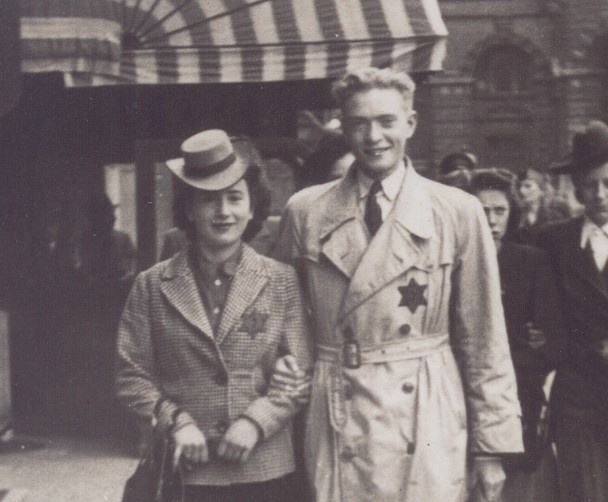
Onder de Duitse bezetting werd de anti-joodse wetgeving snel ten uitvoer gelegd. Joden waren nodig zich moesten registreren, werden uitgesloten van talrijke beroepen, en er werden bedrijven geconfisceerd of “Geariseerd.” In 1942 werden Joden gedwongen de gele Davidster te dragen. Beperkingen ingeschakeld beweging, werkgelegenheid en openbare leven namen toe naarmate de bezetting vorderde.
De Antwerpse Pogrom (april 1941)
Op 14 april 1941 braken in Antwerpen gewelddadige anti-Joodse rellen uit in wat bekend werd als de Antwerpse Pogrom. Het geweld volgde op de screening van de antisemitische nazi propagandafilm Der Ewige Judas (“De Eeuwige Jood”). Na de film, leden van collaborerende en extreemrechtse groeperingen, waaronder activisten die banden hebben met de VNV (Vlaamse Nationale Unie), marcheerden Joodse wijken binnen en voerden gecoördineerde aanvallen uit.
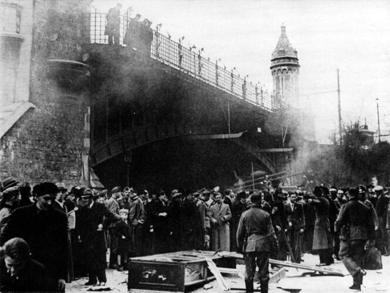
Synagogen werden vernield en verbrand, Thorarollen werden geschonden, Joodse huizen en bedrijven werden geplunderd en individuen werden op straat aangevallen. De residentie van De Antwerpse opperrabbijn, Marcus Rottenberg, werd ook aangevallen. Het geweld voorkwam in de aanwezigheid van de Duitse bezettingsautoriteiten en markeerde een aanzienlijke escalatie van anti-Joods vervolging in de stad.
Hoewel de massadeportaties nog niet waren begonnen, demonstreerde de pogrom de toename kwetsbaarheid van de Joodse bevolking van Antwerpen en was een voorafschaduwing van de systematische arrestaties deportaties die het jaar daarop zouden volgen.
Invallen en deportaties
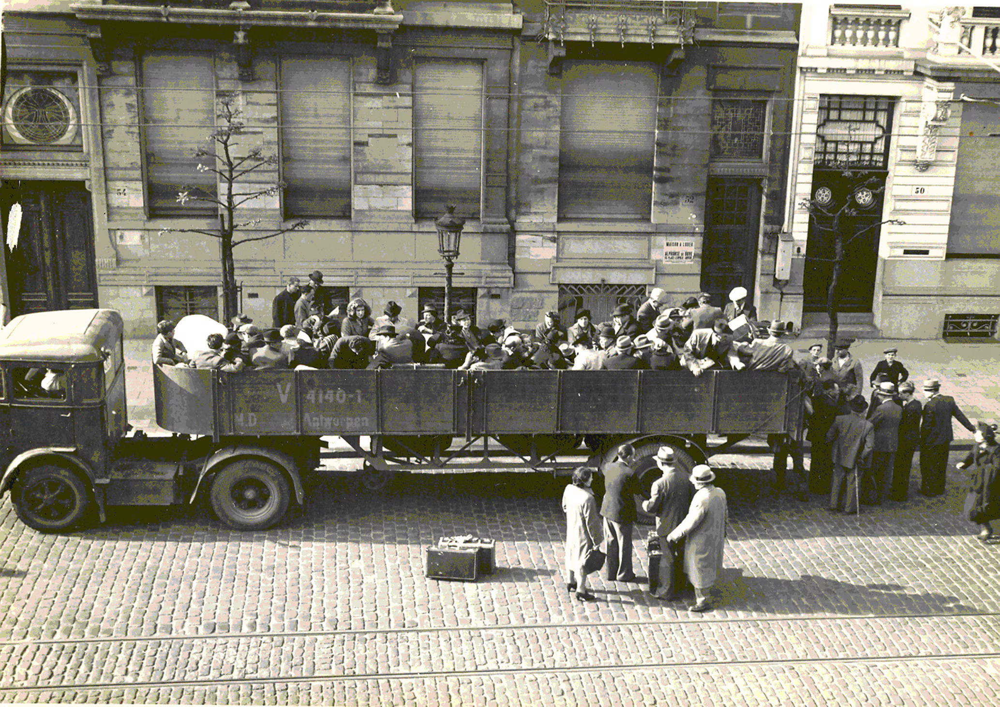
Vanaf de zomer van 1942 escaleerde de vervolging tot systematische deportaties. Antwerpen werd een belangrijke plaats van grootschalige razzia's, vaak uitgevoerd met de razzia's betrokkenheid van de lokale politie. In de nacht van 15 op 16 augustus 1942 vond de eerste grote overval plaats resulteerde in de arrestatie van ongeveer 845 Joden. Zij werden overgebracht naar de Dossin Kazerne doorgangskamp in Mechelen (Mechelen) en vervolgens gedeporteerd Auschwitz-Birkenau.
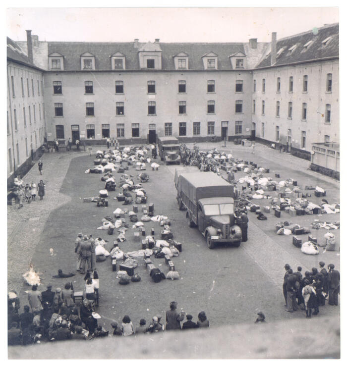
In augustus en september 1942 volgden verdere invallen, die leidden tot arrestatie en deportatie van duizenden Antwerpse joden. Tussen augustus 1942 en juli 1944 vertrokken 28 deportatiekonvooien vanuit de Dossinkazerne, waar ruim 25.000 Joden vanuit België naartoe werden vervoerd uitroeiing kampen. Slechts een klein deel overleefde.
De Joodse gemeenschap in Antwerpen leed bijzonder zware verliezen. Door de concentratie van Joden in herkenbare buurten en de efficiëntie van de deportatie-inspanningen, een hoger percentage Antwerpse joden werd gedeporteerd vergeleken met het landelijk gemiddelde.
Verbergen, weerstand en overleving
Niet alle Joden werden gedeporteerd. Sommigen slaagden erin België te ontvluchten voordat de massa-arrestaties begonnen. vooral tijdens de eerste maanden van de bezetting. Antwerpen had dat als grote havenstad wel diende lange tijd als emigratiepunt, en een aantal Joodse vluchtelingen zochten visa naar het land Verenigde Staten, het Britse Mandaat Palestina en verschillende Latijns-Amerikaanse landen, waaronder Cuba. Hoewel Cuba geen primaire bestemming was voor de Joodse bevolking van Antwerpen, was het wel een kleine bestemming een aantal met Antwerpen gelieerde vluchtelingen en diamanthandelaren vestigden zich er, als gevolg van de bredere verspreiding van de vooroorlogse commerciële netwerken van de stad. Anderen ontsnapten over land via Frankrijk en Spanje naar neutrale landen zoals Zwitserland of Portugal. Toen de grenzen echter strenger werden en de deportaties vanaf 1942 toenamen, ontstonden er kansen want ontsnappen werd uiterst beperkt.
Tot de verzetsdaden in België behoorden vooral pogingen om deportaties te ontwrichten de Aanval van april 1943 over het Twintigste Konvooi, waarbij verzetsleden hielpen gratis Joodse gedeporteerden uit een transporttrein.
Bevrijding
Antwerpen werd op 4 september 1944 door de geallieerden bevrijd. Tegen die tijd was het eens zo bloeiende De Joodse gemeenschap was verwoest. Het merendeel van de Antwerpse joden was gedeporteerd vermoord. Overlevenden keerden terug naar een stad met huizen, bedrijven en gemeenschappelijke instellingen vaak in beslag genomen of vernietigd.
Naoorlogse wederopbouw (1945-1960/1970)
Na de bevrijding van Antwerpen in september 1944 en het einde van de Tweede Wereldoorlog in 1945 De Joodse gemeenschap van de stad stond voor de immense taak van wederopbouw na de verwoestingen van de stad Holocaust. Antwerpen was uitgeroepen Judenrein (gezuiverd van Joden) door de Duitser bezetters, en de meerderheid van de vooroorlogse Joodse bevolking was gedeporteerd en vermoord. Degenen die de oorlog hadden overleefd – hetzij ondergedoken, in geallieerde zones, of in concentratie kampen – begonnen in de maanden na de bevrijding naar de stad terug te keren.
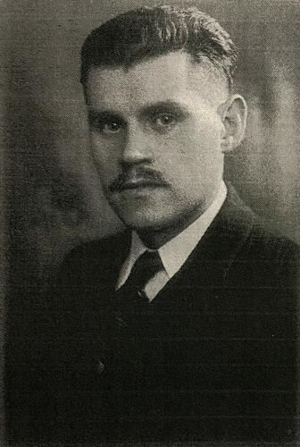
Veel overlevenden werden bij hun terugkeer geconfronteerd met moeilijke omstandigheden. Huizen en appartementen die tot Joodse families hadden behoord, werden vaak door anderen bezet – vluchtelingen, oorlogsslachtoffers, of Geallieerde soldaten ingekwartierd door de autoriteiten – en persoonlijke bezittingen waren vaak geplunderd of vernietigd tijdens de bezetting. Joodse overlevenden worstelden met huisvesting, psychologisch trauma, onzekerheid over het lot van familieleden en de juridische problemen bij het terugvorderen eigendom. Prominente leden van het Joodse verzet in oorlogstijd, zoals Jozef Sterngold, speelde een belangrijke rol bij het organiseren van terugkerende overlevenden en het bepleiten van de behoeften van de gemeenschap.
De wederopbouw van het gemeenschaps- en religieuze leven begon snel. Synagogen en Joods instellingen die het overleefden of hersteld konden worden, werden heropend en het joodse onderwijs werd hervat. Belangrijke scholen zoals Jesode Hatora-Beth Jacob (heropend mei 1945) en Tachkemoni (heropend in mei 1945) hervatte formeel de lessen en diende terug te keren gezinnen en het opleiden van de volgende generatie Joodse studenten.
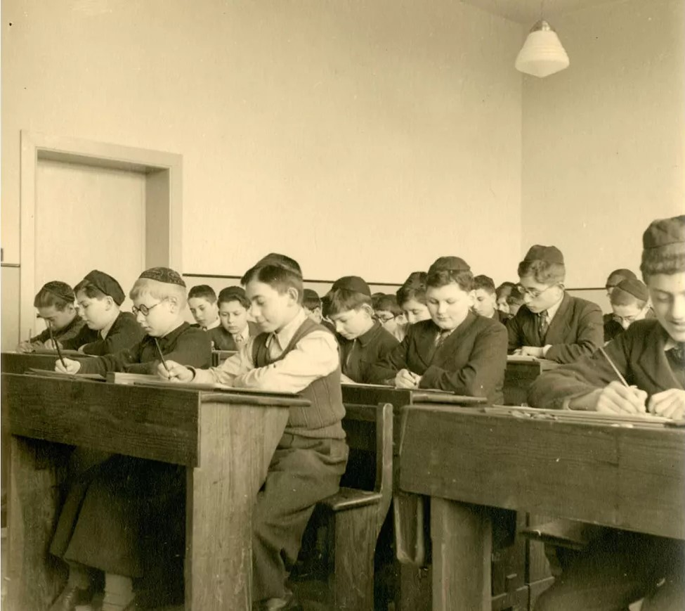
Het economische leven, in het bijzonder de diamant handel, stond centraal in de opwekking van de Antwerpse Joodse gemeenschap. Hoewel de industrie tijdens de oorlog ontwricht was, bleef deze bestaan kreeg in de naoorlogse jaren weer momentum, waardoor veel joodse diamanthandelaren zich terugtrokken arbeiders die ontheemd waren. De diamantsector bleef een belangrijke economische motor voor de gemeenschap, door gezinnen te ondersteunen en levens weer op te bouwen.
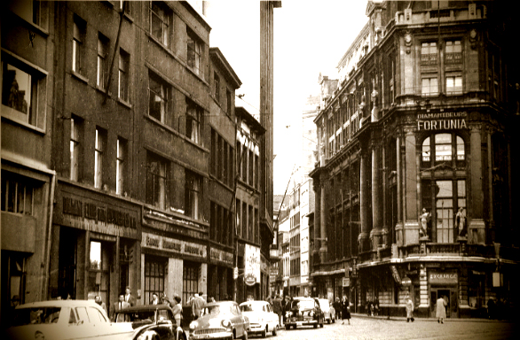
Gedurende de jaren vijftig en het begin van de jaren zestig groeide de Joodse bevolking van Antwerpen langzaam weer. Tot de nieuwkomers behoorden niet alleen terugkerende overlevenden, maar ook joodse migranten uit andere regio's van Europa en Noord-Afrika. De focus op Joods onderwijs ging door en scholen schreven zich in de volgende generatie in zowel religieuze als seculiere onderwerpen, waardoor de identiteit van de gemeenschap wordt versterkt en continuïteit na het uiteenvallen van de Holocaust.
Eind jaren zestig en begin jaren zeventig werd het joodse gemeenschapsleven in Antwerpen opnieuw zichtbaar. opgericht. Joodse wijken nabij het stadscentrum en rond de diamantwijk behielden hun culturele levendigheid, met synagogen, scholen, liefdadigheidsinstellingen en sociale instellingen organisaties die de ruggengraat vormen van het dagelijks leven.
De hedendaagse Antwerpse Joodse Gemeenschap
Demografie
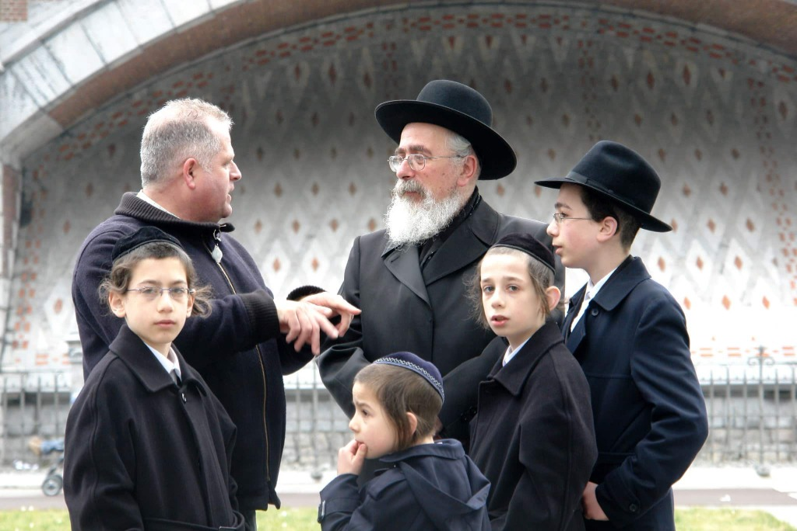
Vandaag de dag is Antwerpen nog steeds een van de grootste en meest levendige Joodse gemeenschappen in Europa. De De stad is de thuisbasis van de meerderheid van de Belgische Joodse bevolking, volgens schattingen in het algemeen waardoor de Joodse bevolking van Antwerpen tussen de 20.000 en 30.000 personen bedraagt. EEN Een aanzienlijk deel van de gemeenschap identificeert zich met orthodox en charedi (ultraorthodox) Jodendom, waardoor Antwerpen een van de meest religieus observerende Joodse centra in Europa is.
Binnen de Haredi-gemeenschap wordt Jiddisch veel gesproken, naast Nederlands, Frans, Hebreeuws en Arabisch Engels. Joodse gezinnen zijn voornamelijk geconcentreerd in wijken nabij de Centrale Station en de historische diamantwijk.
Religieus en gemeenschapsleven
Het joodse leven in Antwerpen concentreert zich rond een dicht netwerk van synagogen, jesjivot, gemeenschap organisaties en liefdadigheidsinstellingen. De stad telt ongeveer dertig inwoners Orthodoxe synagogen en gebedshuizen, die de diversiteit binnen de orthodoxen weerspiegelen Chassidische gemeenschappen.
Grote gemeentelijke organen omvatten Machsike Hadas, wat meerdere vertegenwoordigt Chassidische groepen zoals zoals Belz, Satmar, Vizhnitz en Ger, evenals Shomre Hadas, die dient segmenten van de Moderne orthodoxe gemeenschap. A Sefardische (Portugese ritus) gemeenschap ook handhaaft zijn eigen synagoge en instellingen.
Onderwijs
Joods onderwijs blijft een van de sterkste pijlers van het Joodse leven in Antwerpen. Een grote De meerderheid van de Joodse kinderen gaat naar Joodse dagscholen, een van de hoogste inschrijvingspercentages in de diaspora.
Belangrijke onderwijsinstellingen zijn onder meer Jesode Hatorah-Beth Jacob, ten dienste van de Orthodoxe gemeenschap; Tachkemoni, opgericht in 1920 en aangesloten bij Religieuze zionistische tradities; En Yavne, onder andere. Talrijke jesjivot en meisjesseminaries bieden geavanceerde religieuze studie binnen de charedi-sector.
Het economische leven en de diamantindustrie
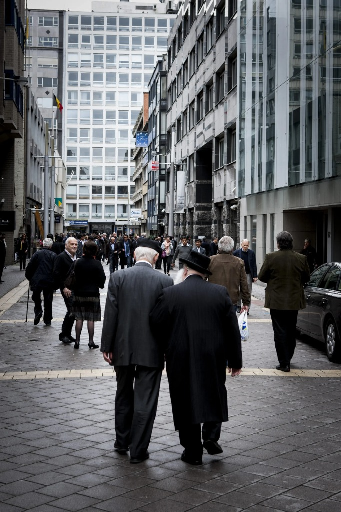
Antwerpen is lange tijd een mondiaal centrum van de diamanthandel en de Joodse gemeenschap geweest speelde historisch gezien een centrale rol in de ontwikkeling ervan. Hoewel de diamantindustrie dat wel heeft gedaan steeds internationaler en gediversifieerder worden, blijven Joodse diamantairs actief binnen de sector. De nabijheid van Joodse wijken tot de diamantwijk weerspiegelt dit deze historische economische verbinding.
Cultureel leven en identiteit
De Joodse wijk nabij het Centraal Station van Antwerpen blijft cultureel onderscheidend, met koosjer bakkerijen, restaurants, boekhandels, rituele baden en gemeenschapscentra die er deel van uitmaken het dagelijkse leven. Joodse feestdagen, openbare menoraverlichting en gemeenschappelijke evenementen dragen hieraan bij de zichtbare aanwezigheid van Joods leven in de stad.
De herdenking van de Holocaust blijft centraal staan in de gemeenschappelijke identiteit. Herdenkingsceremonies, educatief initiatieven en samenwerking met nationale herinneringsinstellingen zorgen ervoor dat de herinnering behouden blijft van de Holocaust en de deportaties uit België blijven deel uitmaken van het publieke bewustzijn.
Hedendaagse uitdagingen
De afgelopen decennia heeft de joodse gemeenschap van Antwerpen met uitdagingen en zorgen te maken gehad over antisemitisme en veiligheid. Er zijn beschermende maatregelen genomen rond scholen en synagogen een vast onderdeel van het gemeenschapsleven worden. Tegelijkertijd blijven Joodse organisaties bestaan actief in maatschappelijke betrokkenheid, interreligieuze dialoog en het onderhouden van sterke banden met Israël en Joodse gemeenschappen wereldwijd.
Referenties
- Schmidt, E. (1994). Geschiedenis van de Joden in Antwerpen. Antwerpen: Excelsior.
- Michman, D. (1998). België en de Holocaust: Joden, Belgen, Duitsers. Jeruzalem: Yad Vashem.
- Saerens, L. (2000). Vreemdelingen in een wereldstad: een geschiedenis van Antwerpen en zijn joodse bevolking (1880-1944). Tielt: Lannoo.
- Vromen, S. (2008). Verborgen kinderen van de Holocaust: Belgische nonnen en hun durf Redding van jonge joden uit de nazi's. Oxford Universiteitspers.